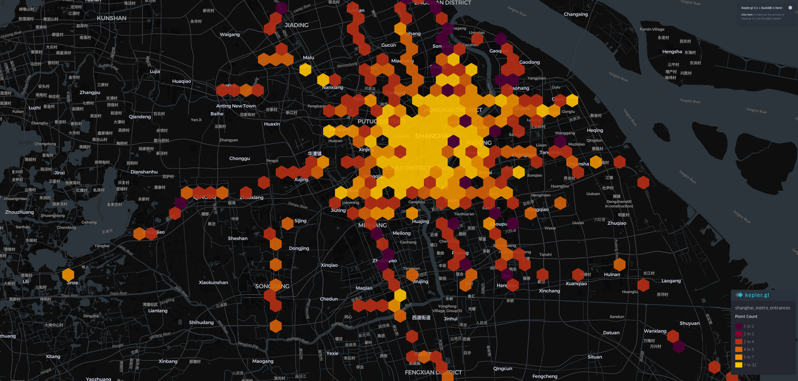

Lab 0 · September 2026
Mapping Shanghai Metro Station Accessibility
The question
Where are Shanghai metro station entrances concentrated, and which areas have the highest density of access points?
The data
Shanghai metro station data from OpenStreetMap contributors via Overpass API (as of 2026-08-31). The data is open-source under the Open Database License. Source: https://www.openstreetmap.org/copyright. Missing: exact entrance counts for multi-entrance stations and accessibility information for each entrance.
The method
Used Kepler.gl to visualize Shanghai metro station data from OpenStreetMap. Projection: WGS 84 (EPSG:4326). Created a heatmap to show concentration of metro entrances, with point markers for individual station locations.

What I found
Metro station entrances are most concentrated in central business districts, particularly around People's Square, Nanjing Road, and Lujiazui in Pudong. The density pattern follows major commercial and residential corridors, with fewer access points in newer suburban developments.
What this does not show
This map shows station locations but not actual entrance counts for multi-entrance stations. It doesn't indicate which entrances have elevator access, escalators, or other accessibility features. The data may not include recently opened stations or entrances.
AI use: AI-assisted for syntax and formatting with Deepseek. I verified it by checking the page on a phone and a laptop, and confirming no external resources were added.